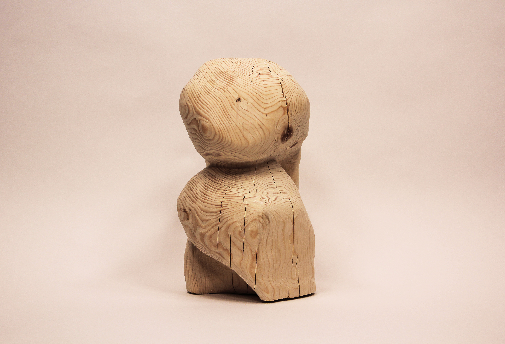
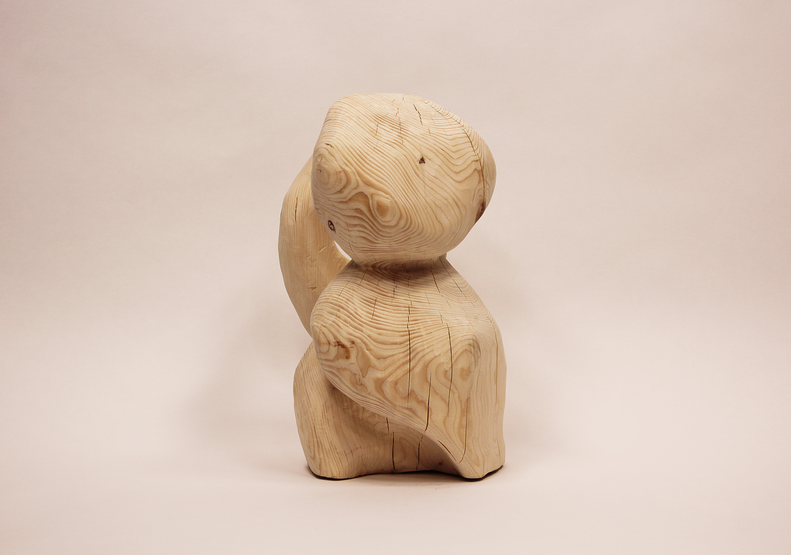
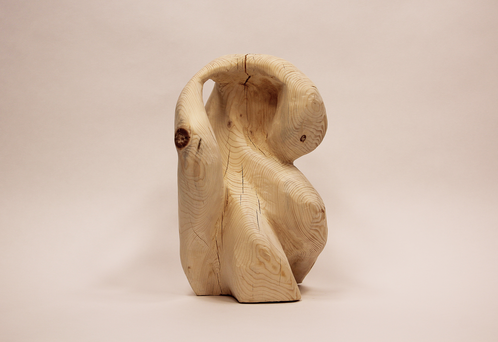
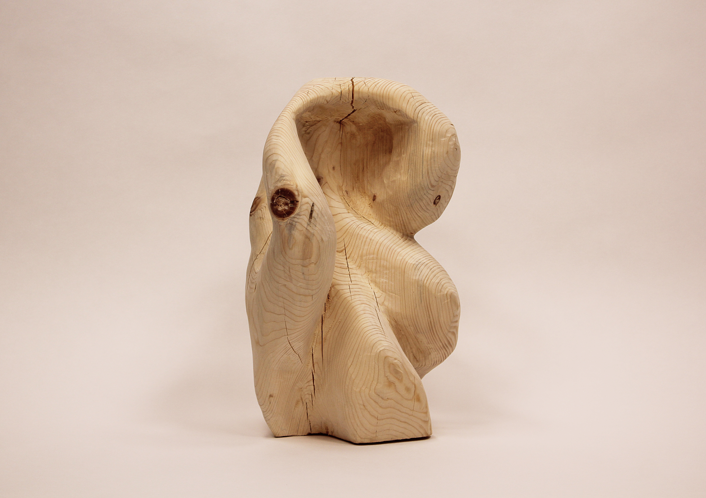
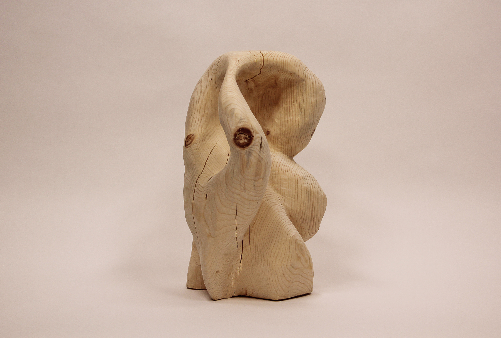
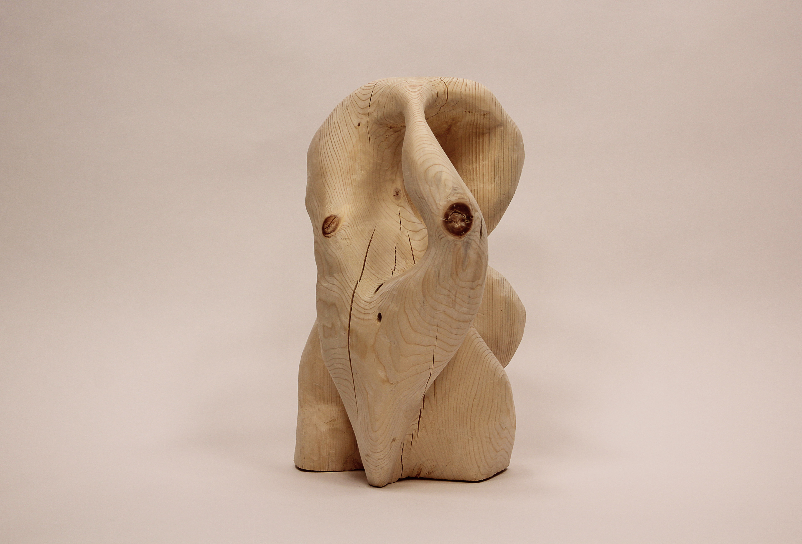
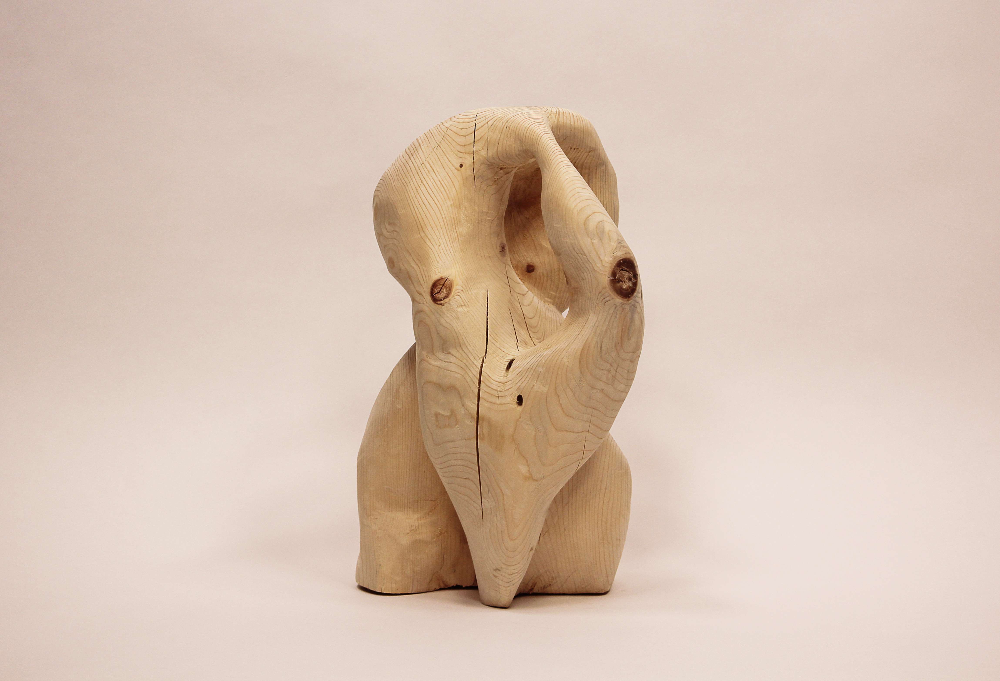
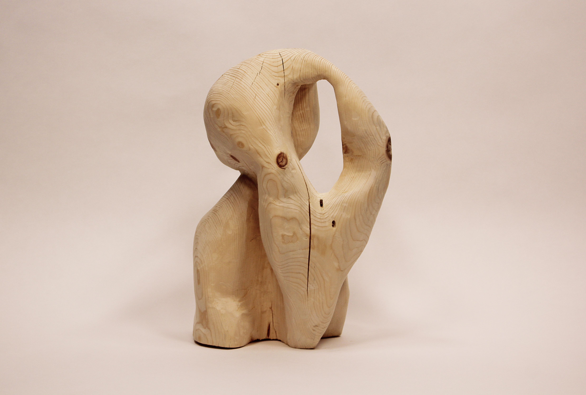
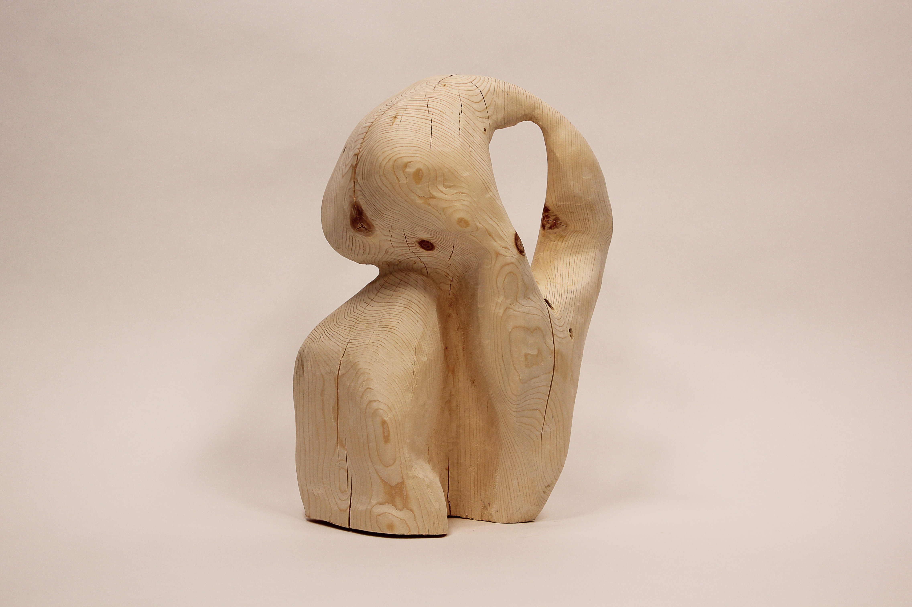
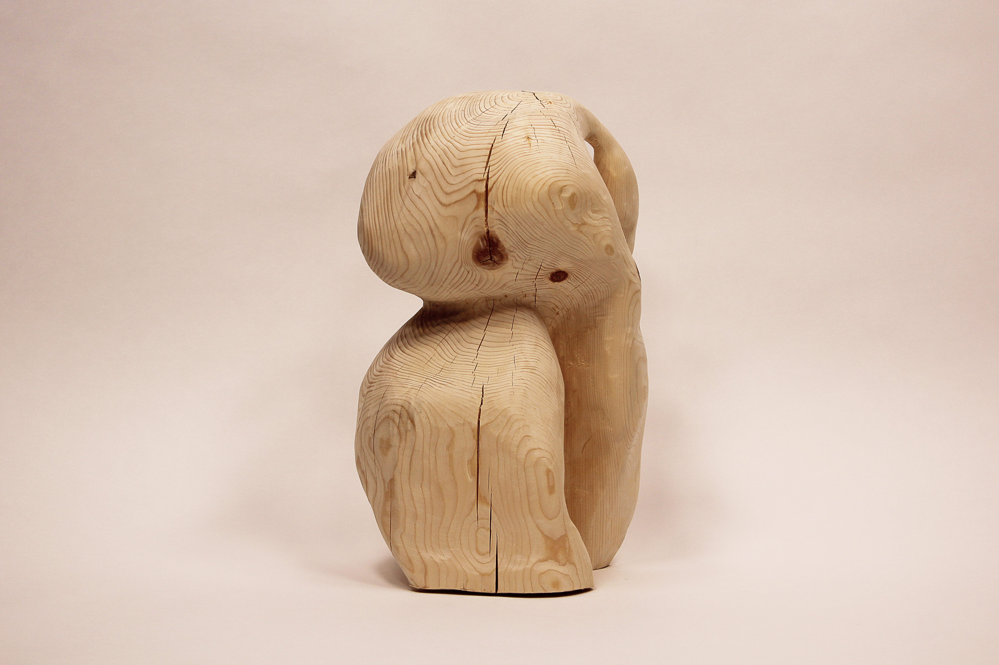

Liminal Space
2025, Spruce, 24 x 13 x 14 inches











Recently, I walked through the woods and wondered if stumps are alive or dead. Sure, from a microscopic level they are full of life, but on a larger scale, once a tree is cut does it continue to communicate with the rest of the forest as it once did? In New England, beech trees can send up new shoots from even the most dead and decayed stumps. Perhaps then, a stump lives somewhere in between - a feeling of transition which I find familiar.